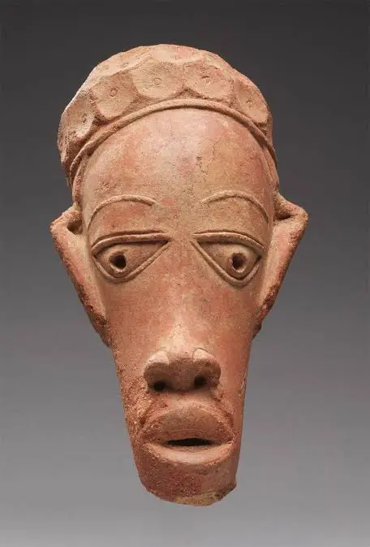
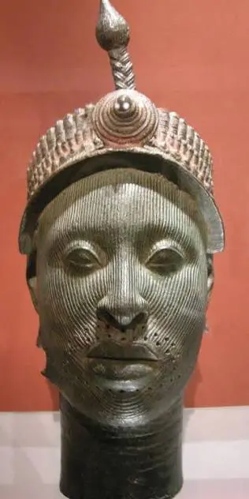
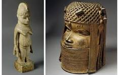
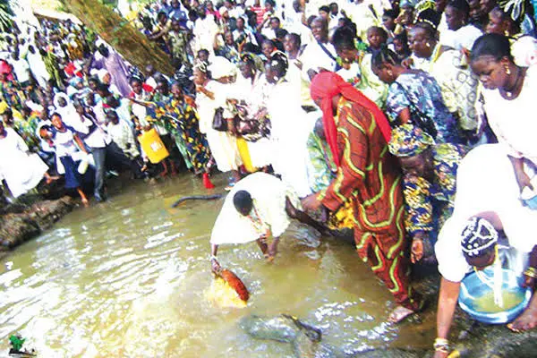
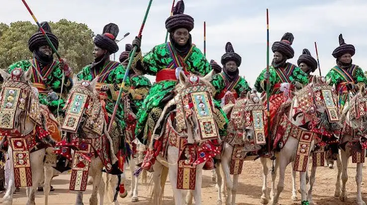
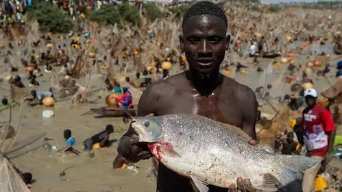

Nok Terracotta
The Nok civilization produced remarkable terracotta sculptures between 500 BC and 200 AD. Their expressive human figures represent one of Africa's oldest known artistic traditions.

The Nok civilization produced remarkable terracotta sculptures between 500 BC and 200 AD. Their expressive human figures represent one of Africa's oldest known artistic traditions.

The ancient city of Ife became famous for producing incredibly realistic bronze and terracotta heads that demonstrate advanced artistic skill.

The Kingdom of Benin created detailed bronze plaques, ceremonial objects, and royal sculptures using the lost-wax casting method.
Wood carving, bronze casting, ivory carving, and terracotta sculpture remain among Nigeria's most respected artistic traditions. Sculptures often symbolize leadership, spirituality, family history, and cultural identity.
Modern Nigerian artists combine traditional themes with contemporary techniques, creating paintings that celebrate culture while addressing modern social issues.

Celebrates the Yoruba river goddess Osun with music, dance, traditional rituals, and colorful processions.

A spectacular northern Nigerian horse-riding festival featuring royal processions, music, and traditional costumes.

A famous annual fishing competition that attracts thousands of visitors from around the world.
Use the buttons below to explore Nigerian artworks by category.